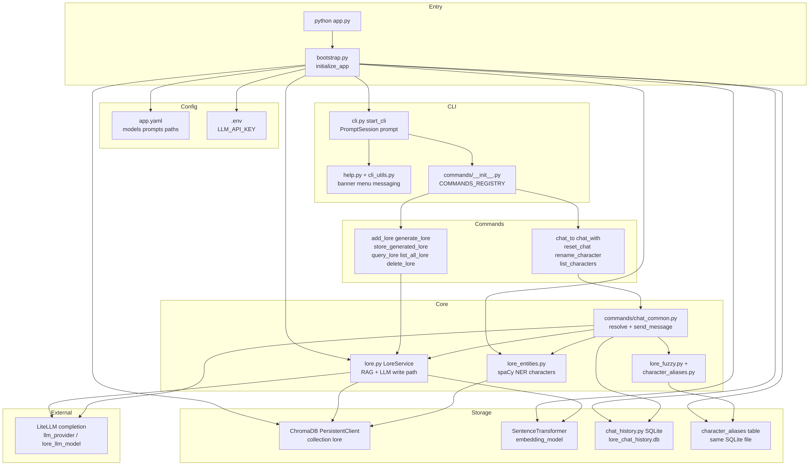

The problem
Most lore tools forget the world the moment you close the session.
I needed lore that stayed put after I walked away. The usual pattern is a dump of text into a pile: searchable if you are lucky, conversational if you paste it back into a chat window, and gone the next time you need it. What was missing was a world you can query on purpose, and people inside it you can talk to without rebuilding context by hand every time.
Why I built it
Day to day, I wanted to write a fact, find it later, and talk to a character who actually remembered what I wrote.
A local CLI was enough for that. I work at a prompt that keeps the world honest, and I can replay a session when I need to show someone how the retrieval path works.
What I built
LoreBuilder is a Python CLI that treats lore like a small product: you add a fact, it gets embedded and becomes searchable, character names get pulled out of the text, and then you talk to one of them with replies grounded in the world you just wrote.
You launch with python app.py. Work happens at a >> prompt.
Three decisions
These are the craft bets I would defend in a design review, each one about honesty, ownership, or maintainability.
1. World and conversation stay separate.
I keep world lore and conversation in different stores on purpose. Lore goes in Chroma. Chat goes in SQLite, one session per character. Adding lore is a write. Generating something is only a draft until I commit it. I was counting on committed facts outliving a cleared chat, because the failure I care about is a bad turn silently rewriting the world. If yesterday's lore and today's banter live in one blob, you stop knowing which is which.
2. Characters come from the text, not a roster.
On the tape, add_lore introduces Captain Voss, and list_characters then shows Voss and Mary, names pulled from stored lore, including entries that were already in the world (Mary, Ardelune, the council of scholars). The cast stays in sync with the writing, so I do not maintain a separate character sheet. If a name is not in the lore, it is not a character you can chat with. The bet was that the writing should decide who exists. I would rather refuse a chat than invent someone the world never named, or keep a roster that claims people the text never mentioned.
3. A command registry, not a growing REPL.
Commands sit in categories (Lore / Characters / System), and help is generated from the registry. I kept one handler per file and left deprecated modules unregistered. Adding a command is a registration, not another if in a mega-loop, so help stays accurate without me rewriting it by hand. I was counting on future me (and anyone reading the repo) judging the CLI by whether help stays true as the list grows. The demo on tape is slightly ahead of the public repo (chat_to / chat_with / reset_chat versus the published chat_as). I leave that gap visible on purpose. Hiding it would make the story cleaner than the code.
Proof
You can replay the same session and watch the retrieval path yourself.
Replay, not a live session: asciinema play -s 4 lorebuilder-demo.cast
>> add_lore Captain Voss keeps a brass compass that always points to the last place he broke a promise. Lore added with id 172161. >> query_lore compass Relevant Lore Entries: Entry 1: Captain Voss keeps a brass compass that always points to the last place he broke a promise. Entry 2: Mary is on the council of scholars. Entry 3: The city of Ardelune is ruled by a council of scholars. >> list_characters Characters mentioned in world lore (2): - Mary - Voss >> chat_to Voss Why does the compass never point north? Voss>> Ah, the compass—an artifact of my own making, but with a burden far heavier than mere metal and glass. It never points north because it seeks to remind me of the weight of my oaths.
The rest of the reply stays in character and pulls Ardelune and the council of scholars into the same answer. That is retrieval, not a canned line.
The clip ends at a new >> prompt; the last frames also show exit returning to the shell.

python app.py / bootstrap)
through Config and CLI command registry; Lore and Chat commands; Core
(LoreService RAG + LLM write path, NER, fuzzy aliases); LiteLLM; Storage
(ChromaDB lore collection, SentenceTransformer embeddings, SQLite chat history).
Why I built it this way
These boundaries are the same ones I hold in iOS work: clear ownership, real persistence, and something a technical peer can judge quickly.
I keep separate storage so chat cannot rewrite lore. I derive characters from what is stored so the cast stays honest. I use a registry so the CLI stays maintainable. If you are going to talk to characters, they should answer from stored facts, not from a prompt that forgot yesterday's entry.